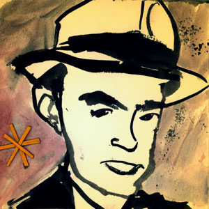
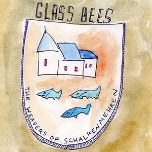
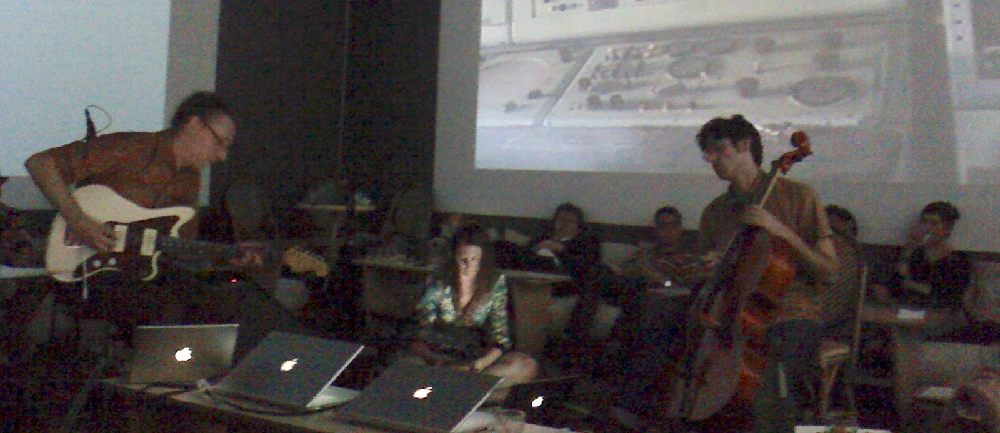
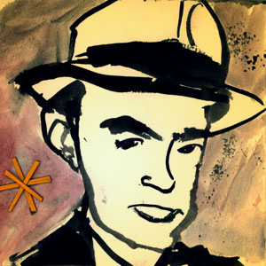
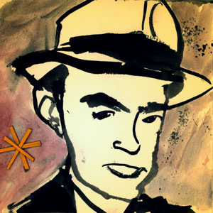
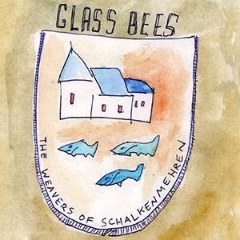
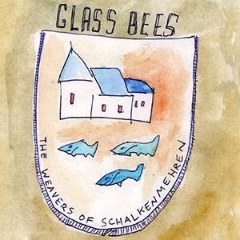

The Glass Bees performing at Envoy Enterprises, NYC, June 26, 2009. (Photos: Lucius Kwok.)
History & Practice: A Glass Bees Timeline
2005-2006
Preface/Introduction
After their rock band The Sick Passengers dissolves, Chris Williams and Jason Das spend a year trying to start a new one, auditioning drummers and aborting new songs. Eventually, they are sufficiently distracted and excited by their unplanned improvisations to prioritize those instead. About once a week for the next six years, Chris and Jason meet at a studio to create sounds, generally recording the room directly into a single microphone attached to a simple digital recorder. For several years they share a studio with a few other bands deep in the basement of the storied Westbeth Building, former home of Bell Labs and the Merce Cunningham Dance Company.
December 17, 2006
Website and Podcast launch
Between 2006 and 2012, the Glass Bees post more than 80 audio recordings of live improvisations to this website and publish them as a podcast. Although these granular posts have been removed from the website, several tracks are later remastered and resequenced for the CD's “Tops Crops Snaps Hots” (2008) and “Because Tomororrow Disaster May Come” (2023, compiling material from 2008-2012). Most tracks feature original cover artwork by Jason; a selection of these images appears below.


November 24, 2007
“The Lake House” at Cake Shop, Lower East Side, NYC
In their first public performance as the Glass Bees, on Thanksgiving Friday, Jason and Chris appear (very) briefly behind a screen as part of a seamless-relay alternate soundtrack to the 2006 Sandra Bullock/Keanu Reeves film “The Lake House.” Also performing: Duf Davis, Shepard, Rule Youth Union, Toby Goodshank, D&D Music Factory, The Kimbrell Brothers, Stolen Brown Evergreen, Polly Wanna, and No, We Are Thor. It's reasonable to suspect that many of these acts did not exist for longer than a day or two.
February 27, 2008
Andrea Williams meets the Glass Bees
When a newly met friend-of-a-friend also makes weird sound art, you invite them to join you in the studio to see how it goes. Andrea Williams is an occasional guest for a few months before becoming a Glass Bee in June 2008.
June 7, 2008
Performance in Chris’s basement in New Jersey
The first proper performance in front of an audience. Jason and Chris are joined by special guest Eve LoCastro (flute) for a performance celebrating Chris’s birthday. Listen:
Good friends Lungs of a Giant, Miami Ice Machine, and Pirate Satellite (Jason and Eve’s other band at the time) also performed.
August 8, 2008
“Tops Crops Snaps Hots” released
The Glass Bees complete “Tops Crops Snaps Hots”, a self-released limited edition CD that compiles and sequences eleven highlights from the group's earliest recordings into a continuous 63'25" mix. The late, great Jim Bentley provides invaluable production assistance at his studio, The Fort.
In 2023, TCSH is lightly remastered and released as a download on Bandcamp.
October 10, 2008
Monkeytown, Williamsburg, Brooklyn NY
Jason, Andrea, and Chris improvise sound to live video mixing by Guillaume Clave as part of Forward Motion Theater’s EyeWash series. An unusual venue, Monkeytown served a full dinner and the audience could recline comfortably under giant video screens covering all four walls of the cube-like room. Also performing: MOSTRA + Nico Mazet, VBLANK + AUTO DA FE, and VJ Pixalot. (Photo: Laura Redman.)
February 16, 2009
OptoSonic Tea series at Diapason Gallery, Sunset Park, Brooklyn NY
Jason, Andrea, and Chris accompany Peter Shapiro and his live video mix “The End of Television” as part of the Optosonic Tea series, which pairs sound and video artists. Ezekiel Honig (Anticipate Recordings) and Joshue Ott (on his superDraw software) also play a beautiful set.
March 4th, 2009
Barbès, Park Slope, Brooklyn NY
Our friend Ranjit Bhatnagar makes a new musical instrument every day for the month of February, mostly from everyday materials. Jason, Andrea, and Chris accompany Ranjit in a concert called “28 Noisy Noises,” which exclusively uses the instruments he created.
Jason, Andrea, and Chris perform in an art gallery, improvising sounds that include live audio drawing with a Drawdio. Blevin Blectum also perfoms and joins the Bees for an encore. (Photo: Lucius Kwok.)
July 14, 2009
Monkeytown, Williamsburg, Brooklyn

Jason, Andrea, and Chris return to Monkeytown, this time accompanying a two-channel video prepared by Chris, based on footage that he and Jason gathered on a frigid field trip to Sandy Hook’s Fort Hancock earlier in the year. This is Andrea’s final appearance as a Glass Bee (before she skips town to get an MFA in Electronic Music from Mills College and a PhD in Electronic Arts from Rensselaer Polytechnic Institute, studying under Pauline Oliveros). Also appearing: Lou Rossi, Carlos’ Red Shoes, and Frogwell. (Photo: Joshua Howard.)
August 1, 2009
Art Social, Wallabout, Brooklyn, NY
As part of a salon curated by Aneikit Bonnel, Jason and Chris perform in the back yard. Featured visual artists are Rebecca Beers Miller, Hanly Gunn, and Claire Falkenberg.
September 20, 2009
“Venice, Brooklyn”
Beginning early on a Sunday morning, Jason and Chris explore the coastline of southeastern Brooklyn, documenting locations at risk of flooding due to climate change. They record sounds, take photographs, make watercolor sketches, and collect objects they find along the way in Floyd Bennett Field, Dead Horse Bay, Sheepshead Bay, and Gerritsen Beach.
Later the same day, they realize an improvised performance and installation in the vestibule of Envoy Enterprises, a gallery in Chinatown, NYC, as part of the Conflux Festival. All materials and sounds they present are gathered, created, displayed, and performed within a 10-hour period. Peter Shapiro documented the performance and did a brief interview with Jason:
Jason and Chris accompany Ranjit Bhatnagar in the culminating performance of his “28 More Noisy Noises,” for which Ranjit once again makes a new musical instrument each day in February. (Photos: dAve Hollinghurst.)
March, 2010
”Ça Fa Palome” Video
Greg Harrison creates a subaquatic animated film set to the Glass Bees' 2007 recording “Ça Fa Palome.”
May 7, 2010
Devotion Gallery, East Williamsburg, Brooklyn, NY
Jason and Chris accompany Ranjit Bhatnagar on his trash-built instruments at the opening the ScrapCycle(reUSE/reCOMBINE) exhibit. Also performing: Bora Yoon and Tom Vanderwall.
June 12-13, 2010
“Reading Governors Island”
As part of the FIGMENT festival, the Glass Bees present an interactive, site-specific performance on Governor’s Island, a former military facility just off the southern tip of Manhattan. Chris and Jason invite festival visitors to read aloud from a collection of found texts documenting how others have imagined Governor’s Island over the last two centuries. We record the readers' voices, and later each day mix them with field recordings made on an earlier visit to the island. The result is an amplified audio collage that brings past and present, environment and human intervention, and performers and audience into play. The performances take place on the western waterfront of the island beneath an installation fashioned from rope, tent poles, and the images we produced.
Special thanks to Anthony Zic, Nadene Dolan, and Greg Harrison for helping with the gear, and to our more than 100 reader participants.
August, 2010
”Saint Jude”
A documentary about arist Mary Lynch by filmmaker Nerina Penzhorn features the Glass Bees’ 2008 recording “The Weavers of Schalkenmehren.”
September 25, 2011
One Thousand Pulses, Woodcliff Lake, NJ
Jason and Chris perform improvised soundtracks in music journalist, label head, and musician Darren Bergstein’s “Tone Cone” in Bergen County. Also appearing: Color Is Luxury (Charles Cohen and Hair_Loss).
May 12, 2011
19ths Loft, Bushwick, Brooklyn
Jason and Chris perform on a bill alongside Hey Exit, Hora Flora, and Andrea Williams (solo). The performance, an improvisation retrospectively released as "The Privatization of Desire," includes audio of Rebecca Solnit in conversation with Peter Coyote. Listen:
March 10, 2012
The Old Stone House, Park Slope, Brooklyn NY
Jason and Chris perform as the Glass Bees for the last time in front of a live audience inside a replica of a 17th century farmhouse. The evening features various combinations of the Glass Bees, Ranjit Bhatnagar, Dan Joseph, and Andrea Williams. (Photos: Ranjit Bhatnagar.)
September 7-9, 2012
“Unique Places of Death” at Momenta Art/Bogart Salon, Bushwick, Brooklyn NY
This multimedia installation, created in collaboration with the Hart Island Project, focuses on locations documented in the burial records of Hart Island, New York City’s largest potter’s field. After consulting the records, we select and visit several “unique places of death,” locations around Brooklyn that witnessed the death of people now buried on the island. At these locations we make paintings, gather sounds, take photographs, and collect quotidian objects. The results become raw material for an installation at the Bogart Salon as part of Citydrift, a three-day festival organized to encourage exploration of and engagement with the urban environment. We have prepared a special webpage documenting the installation and the full twenty-eight hour process.
March 10, 2023
“Because Tomorrow Disaster May Come” released.
“Because Tomorrow Disaster May Come” is a limited-edition deluxe CD and digital album that compiles six tracks originally recorded between 2008 and 2011, featuring Jason, Chris, and Andrea. Containing reproductions of Jason’s artwork and a booklet with archival photos and an essay, the package is released as a part of Chris’s art publishing project, Smooth Space Editions.


 



 
